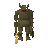
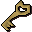
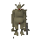
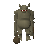
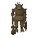
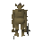
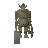
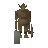

Pee Hat

| Config name | death_troll_guard1 |
| NPC id | 1097 |
| Combat level | 91 |
| Hitpoints | 120 |
| Attack / Strength / Defence | 50 / 100 / 50 |
| Respawn | 100 ticks |
| Options | Attack |
| Category | troll_general |
| Aggression | cowardly |
| Wander range | 0 tiles from spawn |
| Max range | 5 tiles from spawn |
| Defined in | scripts/quests/quest_death/configs/quest_death.npc |
| Bonuses | Attack bonus 40, Strength bonus 70, Stab def 25, Slash def 25, Crush def 40, Magic def 200, Range def 200 |
Pee Hat
A nasty looking troll.
Show all 1 spawn on the world map → Open in knowledge graph →
Drops
Drop script: scripts/drop tables/scripts/troll_commander.rs2 (category handler _troll_general)
Always dropped
| Item | Quantity | Rarity | Notes |
|---|---|---|---|
 Prison key | 1 | Always | if npc_type = troll_general if npc_type = troll_general2 if npc_type = troll_general3 if %troll_quest < ^troll_entered_prison if ~obj_gettotal(troll_key_prison) = 0 |
| 1 | Always | ||
| 1 | Always |
Locations
| Area | Coordinates | Level | Count | Map |
|---|---|---|---|---|
| Death Plateau | 2872, 3598 | 0 | 1 | view |
Related NPCs (category troll_general)

Rock
Stick
Kraka
Troll General
Troll General
Troll General